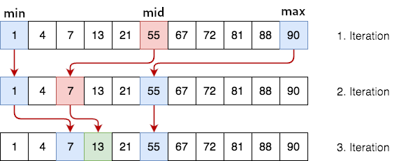

Krótki opis:
Algorytm szuka danego elementu w tablicy uporządkowanej (posortowanej). Złożoność obliczeniowa tego sposobu wyszukiwania jest rzędu O(log)
Algorytm jest realizowany metodą "dziel i zwyciężaj". Dzieli on tablicę na mniejsze podtablice do momentu wyszukania pozycji (lub nie w przypadku gdy taki element nie istnieje) elementu szukanego.
Szczególny opis:

C_best(n) = 1
Przypadek optymistyczny: x = A[(1+N)//2] (w „środku” tablicy)
Czas wykonania w przypadku optymistycznym nie zależy od N
C_worst(n) ≈ lg(N)
Liczba pozostałych do zbadania wartości w każdej iteracji zmniejsza się dwukrotnie.
Przed pierwszą iteracją wynosi N;
w ostatniej (M-tej) iteracji wynosi 2.